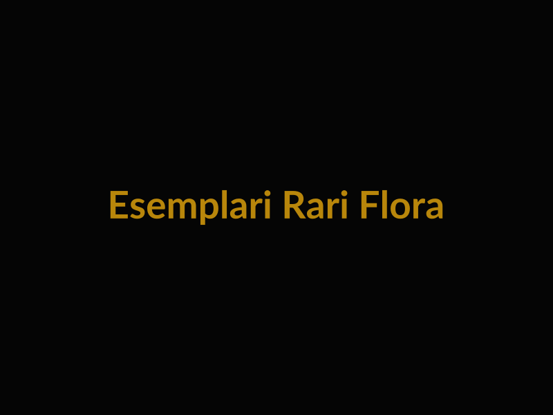
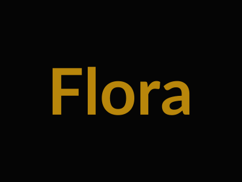

Un ecosistema in equilibrio tra il rigore del giardino all'italiana e la produttività della campagna friulana.
Il parco di Villa Ottelio de Carvalho non è semplice "verde ornamentale". È un archivio vivente.
Ogni albero, ogni siepe è stata piantata con una logica precisa: proteggere la casa dai venti, garantire ombra d'estate, produrre frutti per la tavola e olio per la dispensa.
Qui la natura collabora con l'architettura.
Appena varcato il cancello, lo sguardo è catturato dai veri padroni di casa: i Platani monumentali che dominano la corte interna.
La Funzione: Non sono lì per caso. Nelle ville venete, i platani venivano piantati per creare una "tettoia naturale" (il folador verde) dove svolgere le attività agricole al riparo dal sole estivo.
L'Impatto: Le loro chiome immense creano un microclima unico nella corte, abbassando la temperatura di 3-4 gradi rispetto all'esterno durante l'estate. La loro corteccia "mimetica" è una scultura naturale che cambia colore con la pioggia.

A segnare le prospettive e i confini della proprietà si ergono i Cipressi .
Il Segno Grafico: Con il loro portamento colonnare e sempreverde, queste piante non solo offrono privacy e protezione dal vento, ma disegnano linee verticali eleganti che dialogano con l'orizzontalità dei vigneti circostanti, richiamando la classica estetica del paesaggio toscano e veneto.
Sulla parte più soleggiata e drenata del terreno, dimorano oltre 150 piante di Ulivo .
Il Paesaggio: Queste piante non offrono solo una preziosa produzione di olio extravergine, ma disegnano il paesaggio con il loro fogliame argenteo che brilla al vento, creando un contrasto cromatico elegante con il verde scuro dei cipressi e dei boschi.
Nel giardino cintato e nell'area sul retro della villa, la vegetazione esplode nella sua funzione produttiva e decorativa, tipica del "giardino utile" friulano:
Nel giardino posteriore, più intimo e riservato, spicca un Pero . Un albero da frutto della tradizione, posizionato strategicamente per godere della giusta esposizione solare. In primavera offre una fioritura bianca candida, mentre a fine estate regala frutti a km zero, simbolo della vita autosufficiente di villa.
A portare il colore delle stagioni c'è un magnifico esemplare simile al ciliegio ( Prunus ). La sua presenza è fondamentale per l'estetica del parco: è il primo ad annunciare la primavera con una nuvola di fiori delicati, creando una macchia di colore poetica che spezza il verde dominante del prato.
Non mancano essenze come il Fico (spesso cresciuto vicino ai muri per il calore) e il Caco , che in autunno, quando il parco si spoglia, rimane carico di frutti arancioni brillanti come lanterne naturali nel giardino invernale.
Villa Ottelio non è un'isola. Il suo parco sfuma senza barriere visive nel paesaggio circostante:
I filari geometrici che circondano la proprietà (Merlot, Friulano, Picolit) cambiano la scenografia ogni mese: nudi e scultorei d'inverno, verde brillante in primavera, dorati e rossi in autunno (il foliage famoso in tutto il mondo).
Ai margini della proprietà, macchie di arbusti spontanei garantiscono la biodiversità necessaria all'ecosistema, offrendo rifugio alla piccola fauna locale.